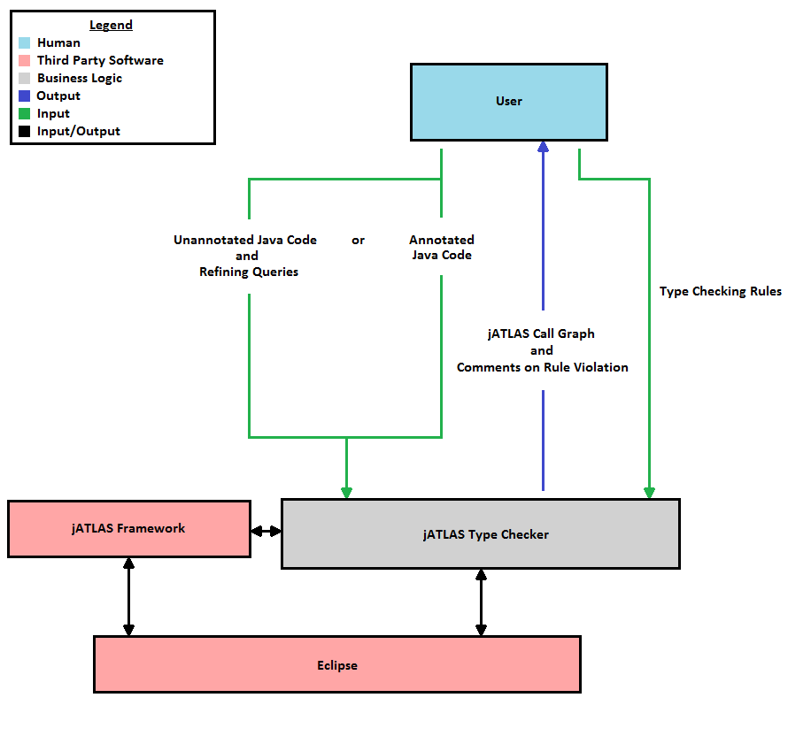

Project Plan: jATLAS Type Checker
Group Email: group-19-491@iastate.edu
Adviser: S. Kothari
Client: S. Kothari
Group Members: Jesse Olds
Brian Reber
Matt Hinrichsen
Jon Mumm
Nick Buchholz
Current type checking software is able to locate code that violates a given rule, but the software is extremely limited in its ability to provide evidence as to why the rule was violated. Knowing why a rule was violated is the first step in creating a viable solution or preventing code from violating the rule again in the future. Additionally, current type checking software can return bloated results for a rule violation, making it difficult to locate the exact portion of code causing the violation.
There is a need for a type checking software that:

The system to be created is a static type checking toolbox implemented on top of jAtlas, a software analysis tool provided by EnSoft Corp. Our tool will statically verify that a program does not violate certain user-specified rules, such as null assignment or taint checking. The tool will return a jAtlas call graph for the provided program, along with brief comments on any rule violations found.
We will be using the Java Runtime Environment from within Eclipse to run the tool. The tool itself will be built on top of the jATLAS framework.
The user interface remains undefined at present, though the most likely approach is to create an Eclipse plugin that works with the jATLAS Eclipse plugin. We may also choose to implement a simple GUI using Java Swing that would provide checkboxes for common conditions for checking the code.
This has not been done yet, but the following contains our plan on how to implement it:
A static type checking program built on the jATLAS framework that takes the application to be checked as well as rules to check as input, and produces a result based on the outcome of the checking. This output would either be a passing result, or a list of warnings that provide the analyst with information about where and how a certain rule was broken.
A prototype of this program (most likely using nullable as the test case) should be delivered by the end of the first semester, and should include some of the basic functionality required.
To be determined - Tasks will be broken down later when we have finalized our procedure. For now, we have included the roles of our group members: